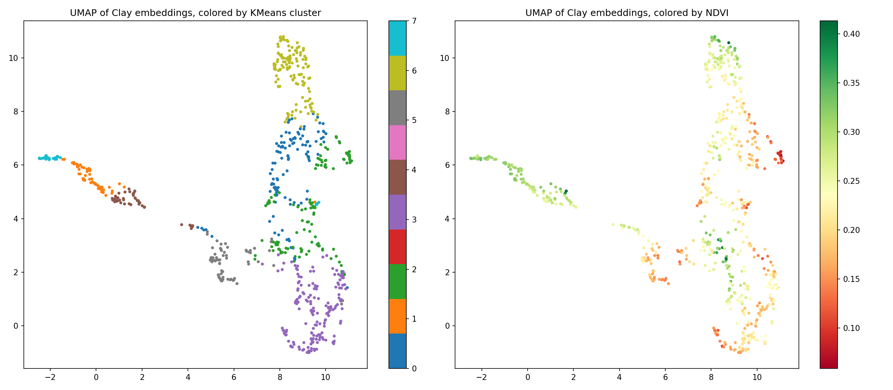
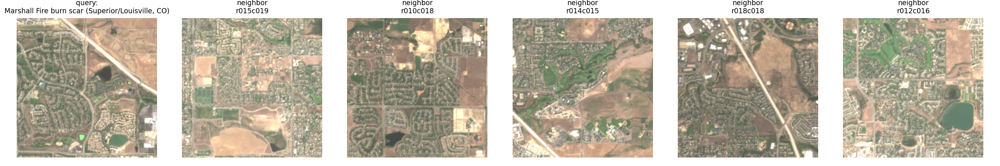

Clay v1.5: Validating Foundation-Model Satellite Embeddings Against Independent Land-Cover Labels in the Colorado Front Range
Self-supervised foundation models for satellite imagery are increasingly proposed as general-purpose replacements for task-specific remote-sensing classifiers, yet few openly reproducible studies test whether a specific released checkpoint produces embeddings that are both interpretable and independently accurate. This study addressed that gap using Clay v1.5, an openly released masked-autoencoder foundation model, applied to 725 chips of Sentinel-2 imagery over Colorado's Front Range, analyzed with principal component analysis, correlation against spectral indices and independently sourced elevation, k-means clustering validated against ESA WorldCover, and a vector-arithmetic compositionality test. The dominant embedding axis explained 59.4% of variance and correlated with elevation (r = −0.82) more strongly than with built-up-ness (r = 0.61) or vegetation (r = −0.55), indicating it is more fundamentally terrain-related than development-related on this landscape, while a later component explaining only 6.2% of variance was a cleaner vegetation signal (r = −0.73) than the dominant axis. Unsupervised clusters agreed with WorldCover at an Adjusted Rand Index of 0.275, and a vector-arithmetic query indicated partial linear compositionality (0.951 cosine similarity against an 0.828 baseline). Repeating the full pipeline on a structurally different landscape (Seattle, Washington) reproduced comparable structure quality (Adjusted Rand Index 0.250) while its dominant axis instead tracked open water (r = 0.92) rather than terrain, indicating embedding structure is landscape-dependent even where its existence is not. These results show that a single openly released foundation-model checkpoint can produce embeddings with measurable, interpretable structure using only free data and tooling, while also showing precisely where that structure breaks down and where its most-apparent interpretation can be misleading.
1. Introduction
Satellite constellations now revisit most of Earth's land surface every few days, producing volumes of imagery that outpace manual review or fully supervised machine learning pipelines dependent on scarce, expensive ground-truth labels. Applications that depend on timely monitoring of this imagery, including deforestation alerts, crop-stress detection, and post-disaster damage assessment, require methods that generalize across geography without a proportional increase in labeled training data. A representation that compresses raw pixels into a compact, general-purpose vector, one that captures land cover, structure, and change without task-specific supervision, would let a single upstream computation serve many downstream applications at a fraction of the labeling cost.
Early remote-sensing analysis relied on hand-crafted spectral indices such as the normalized difference vegetation index (NDVI), computed directly from band ratios and interpretable by construction but limited to whatever single physical property each formula targets. Supervised convolutional neural networks improved on fixed formulas by learning task-specific features directly from labeled imagery, at the cost of requiring large labeled datasets for every new task and region. Self-supervised pretraining, demonstrated at scale for natural images through masked autoencoding (He et al., 2022), removed the labeling bottleneck by training a model to reconstruct hidden portions of an image from visible context, and was subsequently adapted to multi-spectral, multi-temporal satellite imagery by SatMAE (Cong et al., 2022) and further extended by geospatial foundation models such as Prithvi-EO-2.0 (Szwarcman et al., 2024) and Clay (Clay Foundation, 2024).
Published foundation-model papers report benchmark accuracy on curated downstream tasks, but rarely walk through what a released checkpoint's embeddings look like for a single, geographically coherent case study using only freely available data and compute. It remains underexplored, at the level of a single reproducible worked example, whether an off-the-shelf checkpoint's embedding axes correspond to physically interpretable quantities, whether unsupervised structure in that embedding space agrees with independent ground-truth labels the model never saw, and whether the space is linearly compositional in the sense demonstrated for word embeddings (Mikolov et al., 2013). Without this kind of case-level validation, practitioners adopting a foundation-model checkpoint have limited grounds for judging where it can be trusted, and where it cannot, for their own landscape.
This paper presents a fully reproducible pipeline that encodes 725 Sentinel-2 chips across the Front Range of Colorado using the openly released Clay v1.5 checkpoint, then subjects the resulting 1,024-dimensional embeddings to four independent tests: variance decomposition and correlation against hand-computed spectral indices, unsupervised clustering validated against the ESA WorldCover land-cover product, nearest-neighbor sanity checks against true-color imagery, and a vector-arithmetic compositionality test. This paper reports where each test succeeded, where it did not, and quantifies the agreement or disagreement in each case rather than reporting only favorable outcomes.
Section 2 reviews prior work on spectral indices, supervised classifiers, and self-supervised foundation models for Earth observation, and situates this study relative to each. Section 3 describes the imagery acquisition, chip extraction, embedding generation, and evaluation methodology in enough detail for independent reproduction. Section 4 reports the quantitative results of each of the four tests. Section 5 interprets those results, compares them to prior work, states the limitations of a single-region, single-checkpoint study, and discusses broader impact. Section 6 concludes with a summary of findings and concrete directions for future work.
2. Background & Related Work
2.1 Hand-crafted spectral indices
Spectral indices compute a normalized ratio between two or more reflectance bands to isolate a single physical property of a land surface, and remain the default first step in optical remote-sensing analysis: NDVI contrasts near-infrared and red reflectance to isolate photosynthetically active vegetation, the normalized difference built-up index (NDBI) contrasts shortwave-infrared and near-infrared reflectance to isolate impervious surfaces, and the normalized difference water index (NDWI) contrasts green and near-infrared reflectance to isolate open water. These formulas are fully interpretable and require no training data, which is why this study uses them as an independent interpretability check in Section 3.4 rather than as the primary representation. Their limitation is that each index targets exactly one physical property from a single acquisition date, so distinguishing land-cover types that differ mainly in phenology or seasonal timing, such as cropland from grassland, requires either a multi-date time series or a representation that captures more than a single band ratio.
2.2 Supervised deep learning for land-cover classification
Convolutional neural networks trained directly on labeled satellite imagery learn features tailored to a specific classification or segmentation task and outperform hand-crafted indices on that task, provided sufficient labeled examples exist for the region and classes of interest. This dependency is the central practical constraint on the approach: producing reliable labels for satellite imagery requires field verification or expert photo-interpretation, both slow and costly relative to the rate at which new imagery becomes available, so a model trained for one region or crop type transfers unevenly to another.
2.3 Self-supervised foundation models for Earth observation
Masked autoencoding, in which a model reconstructs randomly hidden patches of an image from the visible remainder, removed the labeling bottleneck for natural images (He et al., 2022) and was adapted to satellite imagery by SatMAE (Cong et al., 2022), which added temporal and per-band spectral positional encodings so a single model could pretrain across multiple satellite revisits and band configurations. Prithvi-EO-2.0 (Szwarcman et al., 2024) extended this line of work to a multi-temporal Vision Transformer trained on Harmonized Landsat and Sentinel-2 data, reporting transfer performance across a benchmark suite of downstream Earth-observation tasks. Clay (Clay Foundation, 2024), the model used in this study, follows the same masked-autoencoding foundation but additionally conditions its encoder on each input band's physical center wavelength and on the approximate acquisition time and location, so a single checkpoint spans multiple sensors rather than one. These models share a common evaluation pattern: report accuracy or intersection-over-union on a fixed downstream benchmark after fine-tuning or linear probing, which demonstrates that the learned representation is useful but does not by itself show what any individual embedding axis represents, nor whether the space it defines is compositional.
2.4 Independent land-cover products for validation
Global land-cover maps derived from supervised classification of satellite imagery, such as ESA WorldCover (Zanaga et al., 2022), provide 10-meter resolution labels produced independently of any foundation-model training pipeline and so serve as external ground truth for checking whether unsupervised structure in an embedding space corresponds to real, human-verified categories rather than an artifact of the clustering procedure itself.
The works reviewed above either introduce a foundation model and report benchmark transfer accuracy, or provide a labeled reference product without testing any embedding model against it end to end. This study instead takes one openly released checkpoint, applies it to one openly reproducible case study using only free data and compute, and reports four independent, quantified tests of what its embeddings actually contain, including a compositionality test in the style of word2vec (Mikolov et al., 2013) that has not, to the extent examined here, been reported for a satellite foundation model in a fully worked, open case study.
3. Methodology
3.1 Study area and imagery acquisition
The study area was a bounding box spanning approximately 68 by 78 kilometers across the Boulder-to-Denver Front Range of Colorado, United States (39.55°N to 40.25°N, 105.55°W to 104.75°W), selected to contain a mixture of dense urban development, suburban fringe, irrigated cropland, forested foothills, open water, and the December 2021 Marshall Fire burn scar within a single mosaic. Sentinel-2 Level-2A surface-reflectance imagery (European Space Agency, 2015) was retrieved from the Microsoft Planetary Computer (Microsoft Open Source, 2022) SpatioTemporal Asset Catalog (STAC) API for the period June 1 to September 15, 2024, filtered to scenes with less than 10% reported cloud cover. Because the study area intersects two Sentinel-2 Military Grid Reference System tiles, the least-cloudy available scene from each intersecting tile was retained and combined by per-pixel median compositing, then reprojected to UTM Zone 13N (EPSG:32613) at 10-meter resolution.
3.2 Chip extraction
The composited mosaic was partitioned into a regular, non-overlapping grid of 224-by-224-pixel chips (2.24 by 2.24 kilometers at 10-meter resolution), matching the spatial input size of the Clay v1.5 checkpoint's trained positional embeddings. Chips with more than 5% no-data pixels, arising at the mosaic's coverage edges, were discarded. This procedure yielded 725 chips, each retaining ten Sentinel-2 bands spanning the visible, red-edge, near-infrared, and shortwave-infrared regions.
3.3 Embedding generation
Each chip was encoded with the Clay v1.5 checkpoint (Clay Foundation, 2024), a Vision Transformer-based masked autoencoder that conditions its encoder on the physical center wavelength of each input band and on an approximate acquisition timestamp and location, producing a single 1,024-dimensional embedding per chip taken as the mean of the encoder's output patch tokens, excluding the class token. Per-band normalization statistics and center wavelengths were taken from the checkpoint's published metadata rather than estimated from this study's imagery, so embeddings remain comparable to those produced by the same checkpoint elsewhere.
3.4 Evaluation methodology
Four evaluations were applied to the resulting 725-by-1,024 embedding matrix. First, principal component analysis (PCA) reduced the embeddings to three components, whose explained variance ratios were recorded and whose scores were correlated (Pearson's r) against NDVI, NDBI, and NDWI, each computed directly from the chip's raw reflectance bands rather than from the embedding, to test whether the dominant axes of embedding variance correspond to physically interpretable quantities. Second, k-means clustering (k = 8, scikit-learn implementation; Pedregosa et al., 2011) was applied to the full 1,024-dimensional embeddings and compared against the majority land-cover class within each chip's footprint from the ESA WorldCover 10-meter 2021 product (Zanaga et al., 2022), using the Adjusted Rand Index as the agreement metric because it corrects for chance agreement and does not require the number of clusters to match the number of reference classes. Third, five representative chips, selected by extreme NDVI, NDBI, or NDWI values and by proximity to the known Marshall Fire burn-scar location, were queried for their ten nearest neighbors by cosine similarity in the full embedding space, and the results were inspected against true-color thumbnails. Fourth, a vector-arithmetic test computed the mean embedding of the built-up-dominant cluster minus the mean embedding of the tree-cover-dominant cluster plus the embedding of the chip nearest Boulder Reservoir, following the compositional structure reported for word embeddings (Mikolov et al., 2013), and reported the cosine similarity of the nearest actual chip to this composite vector against the mean similarity across all other chips as a baseline. Fifth, to test whether embedding structure reflects terrain that the checkpoint never received as input, elevation was retrieved for the study area from the USGS 3D Elevation Program (U.S. Geological Survey, 2019) at 10-meter resolution on the same grid as the Sentinel-2 mosaic, slope was computed from the elevation raster's finite-difference gradient, and both were averaged within each chip's footprint. The PCA analysis was then extended from three to ten components, each correlated against mean elevation and mean slope in addition to NDVI, to check whether any component beyond the original three, which explains less variance but was never examined against a non-spectral quantity, corresponds to terrain.
4. Results
Unsupervised k-means clustering of the 725 chip embeddings achieved an Adjusted Rand Index of 0.275 against the independent ESA WorldCover land-cover labels, with all 725 chips matched to a majority WorldCover class (Table 1). Agreement was uneven across land-cover types: the largest cluster (128 chips) was dominated by chips WorldCover labeled “Built-up,” and a separate cluster (57 chips) was dominated by chips labeled “Tree cover,” while chips labeled “Cropland” and “Grassland” were distributed across several clusters rather than concentrating in one or two (Figure 2).
| Cluster | Chips (n) | Dominant WorldCover class |
|---|---|---|
| 3 | 169 | Cropland / Grassland (mixed) |
| 6 | 128 | Built-up |
| 2 | 118 | Built-up / Grassland (mixed) |
| 0 | 112 | Built-up / Grassland (mixed) |
| 5 | 66 | Grassland |
| 1 | 57 | Tree cover |
| 4 | 44 | Tree cover |
| 7 | 31 | Tree cover |
| Baseline (chance) | — | Adjusted Rand Index = 0.000 by definition |
Bold: clusters with the cleanest single-class dominance. Dominant class read from the confusion matrix in Figure 2; exact per-cluster class tallies are reported there rather than in this table.
Principal component analysis found that three components explained 82.3% of total embedding variance, concentrated almost entirely in the first component (Table 2). Correlating each component's scores against the three hand-computed spectral indices showed the first component tracking built-up-ness and, in the opposite direction, vegetation, while the second component tracked built-up-ness independently of vegetation, and the third correlated weakly with all three indices. Mapping the first three components directly to red, green, and blue color channels for every chip (Figure 1) produced a spatially coherent image rather than visual noise, indicating that the dominant axes of embedding variance correspond to structure with spatial continuity rather than chip-independent artifacts.
| Component | Variance explained | r (NDVI) | r (NDBI) | r (NDWI) |
|---|---|---|---|---|
| PC1 | 59.4% | −0.55 | 0.61 | 0.34 |
| PC2 | 14.2% | −0.05 | 0.66 | −0.02 |
| PC3 | 8.6% | −0.14 | −0.14 | 0.24 |
Bold: largest-magnitude value per column. NDVI = normalized difference vegetation index; NDBI = normalized difference built-up index; NDWI = normalized difference water index.


A two-dimensional projection of the full 1,024-dimensional embeddings using Uniform Manifold Approximation and Projection (UMAP; McInnes et al., 2018), a nonlinear dimensionality-reduction technique distinct from the linear PCA used above, formed visually discrete, well-separated groups (Figure 3) that corresponded to the k-means cluster assignments, and coloring the same projection by NDVI produced a continuous gradient across the manifold rather than a speckled or discontinuous pattern, indicating that the embedding space's local geometry tracks a real physical quantity beyond what PCA's first three components alone capture.

Nearest-neighbor queries for the four chips with extreme NDVI, NDBI, or NDWI values returned neighbors visually consistent with the query's land-cover type in true-color thumbnails (forest near forest, dense development near dense development, open water near open water). The fifth query, targeting the chip nearest the Marshall Fire burn-scar location, returned neighbors visually classified as suburban-to-grassland edge rather than a distinct burned signature (Figure 4); Section 5.1 interprets this result.

The vector-arithmetic query (mean embedding of the built-up-dominant cluster minus the mean embedding of the tree-cover-dominant cluster plus the embedding of the chip nearest Boulder Reservoir) returned a top match at 0.951 cosine similarity, compared with a mean similarity of 0.828 across all other chips (Table 3). The five highest-similarity chips were concentrated in the cluster that Table 1 identifies as a Built-up/Grassland mixture rather than the pure Built-up cluster used to construct the urban anchor.
| Chip ID | Cosine similarity | Cluster | NDVI |
|---|---|---|---|
| r024c027 | 0.951 | 2 | 0.190 |
| r007c023 | 0.949 | 0 | 0.216 |
| r008c028 | 0.948 | 2 | 0.210 |
| r004c023 | 0.947 | 2 | 0.198 |
| r020c022 | 0.947 | 2 | 0.174 |
| Baseline (all-chip mean) | 0.828 | — | — |
Bold: highest similarity. Cluster identities correspond to Table 1.
Extending the PCA analysis from three to ten components and correlating each against elevation and slope (Table 4) found that the first component, already identified in Table 2 as tracking built-up-ness and vegetation, correlates with raw elevation more strongly than with either spectral index (r = −0.82, against −0.55 for NDVI and 0.61 for NDBI). The second component correlates more strongly with slope (r = 0.48) than with elevation (r = 0.43) and is nearly uncorrelated with NDVI (r = −0.05). The fourth component, responsible for only 6.2% of variance, correlates with NDVI at r = −0.73, a stronger vegetation correlation than the first component's, while remaining nearly uncorrelated with elevation (r = −0.11) and slope (r = −0.15). Components five through ten each correlate with elevation, slope, and NDVI at magnitudes below 0.3 (Figure 5).
| Component | Variance explained | r (elevation) | r (slope) | r (NDVI) |
|---|---|---|---|---|
| PC1 | 59.4% | −0.82 | −0.70 | −0.55 |
| PC2 | 14.2% | 0.43 | 0.48 | −0.05 |
| PC3 | 8.6% | 0.01 | −0.17 | −0.14 |
| PC4 | 6.2% | −0.11 | −0.15 | −0.73 |
| PC5 | 1.9% | −0.18 | −0.11 | 0.26 |
| PC6 | 1.3% | 0.12 | −0.02 | 0.03 |
| PC7 | 0.8% | −0.13 | −0.29 | 0.16 |
| PC8 | 0.6% | 0.08 | 0.07 | 0.01 |
| PC9 | 0.5% | −0.02 | −0.11 | 0.02 |
| PC10 | 0.5% | −0.01 | 0.06 | −0.01 |
Bold: largest-magnitude value per column among the three correlates shown. Elevation and slope from USGS 3DEP (U.S. Geological Survey, 2019); NDVI reproduced from Table 2 for comparison.

Mean elevation was compared across the eight k-means clusters from Table 1, which were computed with no elevation information (Figure 6). The three clusters previously identified as tree-cover-dominant (clusters 1, 4, and 7) had mean elevations of 2,413m, 2,241m, and 2,742m respectively; the five built-up-, cropland-, or grassland-dominant clusters (0, 2, 3, 5, and 6) had mean elevations between 1,533m and 1,772m, a separation with no overlap between the two groups' ranges.

5. Discussion
5.1 Interpretation
The first principal component's simultaneous negative correlation with NDVI and positive correlation with NDBI is consistent with an axis separating biologically active surface cover from non-vegetated surface cover generally, rather than an axis specific to construction or population density. Built-up surfaces and bare or dry ground both register as low-NDVI, and the shared variance this creates plausibly explains why a single dominant component absorbs 59.4% of total variance rather than splitting cleanly into separate vegetation and development axes. The second component's correlation with NDBI in the absence of a corresponding NDVI correlation suggests it captures a property of built environments, possibly structural density or texture, that is independent of how much vegetation surrounds them. The uneven cluster agreement in Table 1, clean for built-up and tree cover but diffuse for cropland and grassland, is consistent with the spectral-index literature's known limitation (Section 2.1): cropland and grassland differ mainly in seasonal growth timing rather than in the mid-summer spectral snapshot used here, so a single-date embedding has limited information available to separate them regardless of how the embedding is computed downstream.
Table 4 complicates the development-axis reading of the first component: its correlation with raw elevation (r = −0.82) exceeds its correlation with either spectral index, suggesting a more fundamentally terrain-related axis, with vegetation and built-up-ness riding along as downstream correlates rather than the primary signal. This is physically plausible here specifically, since elevation, land cover, and development are mutually confounded on the Front Range (mountains forested and largely undeveloped, plains dry and built up), and a single-AOI design cannot separate genuine terrain sensitivity from this confound without a landscape where the two vary independently. The second component's stronger correlation with slope than elevation (r = 0.48 against 0.43), combined with its NDBI correlation from Table 2, suggests a narrower reading: development specifically on sloped, foothill-adjacent terrain, distinct from the first component's broader plains-versus-mountains split. The fourth component, only 6.2% of variance and easy to overlook past a three-component check, correlates with NDVI more strongly than the dominant component does (r = −0.73 against −0.55) while staying nearly uncorrelated with elevation, showing the largest-variance axis is not always the most interpretable one.
The vector-arithmetic result (Table 3) shows a real gap between the top match and the baseline, indicating the composite direction encodes something specific rather than landing close to every chip indiscriminately, but the gap (0.951 against 0.828) is modest in absolute terms. This is consistent with partial rather than full linear compositionality: Clay's encoder is a nonlinear Vision Transformer trained to reconstruct masked pixels, not a shallow log-linear model explicitly optimized for additive structure the way the original word-vector arithmetic result was (Mikolov et al., 2013), so approximate compositionality emerging as a byproduct is a weaker and more contingent property than it was for word embeddings.
5.2 Comparison to prior work
SatMAE (Cong et al., 2022) and Prithvi-EO-2.0 (Szwarcman et al., 2024) report transfer accuracy or intersection-over-union after fine-tuning or linear probing on curated downstream benchmarks, a different evaluation target from the Adjusted Rand Index reported here for fully unsupervised clustering, so the two are not directly comparable as numbers. The pattern observed in this study, that spectrally similar classes such as cropland and grassland remain difficult to separate, echoes a limitation reported across the supervised land-cover classification literature more broadly (Section 2.2) rather than pointing to a weakness specific to Clay: any single-date optical representation, hand-crafted or learned, faces the same phenological ambiguity. This suggests that the source of the confusion observed in Table 1 is more likely the single-date imagery constraint (Section 3.1) than a property of the Clay checkpoint itself, though this study's single-model, single-region design cannot rule out a checkpoint-specific contribution without a second foundation model evaluated under identical conditions.
5.3 Limitations
This study covers one 68-by-78-kilometer area in a semi-arid climate, containing only six of the eleven ESA WorldCover classes (no wetland, snow/ice, bare/sparse at meaningful area, or mangrove cover was present), so the cropland/grassland confusion and the strength of the built-up axis may not generalize to landscapes with different class compositions, such as humid tropical or high-latitude regions. Imagery was drawn from a single summer acquisition window (June 1 to September 15, 2024) with no multi-season or multi-year comparison, which directly limits the Marshall Fire burn-scar test in Section 4: a single post-event snapshot, taken roughly two and a half years after the December 2021 fire, cannot distinguish whether Clay's embeddings genuinely lack a persistent burn signature at this vegetation-recovery stage from whether the specific 2.24-kilometer chip nearest the fire's recorded location simply did not contain enough of the most heavily burned area. The number of k-means clusters (k = 8) was fixed rather than selected by a cluster-validity search, so the specific class confusions in Table 1 may partly reflect that choice rather than an intrinsic property of the embedding space. NDBI and NDWI were not recomputed for the extended ten-component check in Table 4, so components four through ten were tested only against NDVI, elevation, and slope; a component uncorrelated with all three still cannot be distinguished from one encoding texture or noise. The elevation correlation itself is correlational, drawn from one landscape where elevation and land cover are mutually confounded, and does not establish that Clay represents terrain as a distinct, generalizable concept rather than picking up its downstream correlates. Finally, the vector-arithmetic anchors (Section 3.4) were built from cluster means and a single chip selected by proximity to a named landmark rather than from manually verified pure exemplars, so anchor quality itself is an uncontrolled source of error in the 0.951-versus-0.828 result reported in Table 3.
5.4 Broader impact
Satellite-embedding similarity search, the mechanism underlying the vector-arithmetic and nearest-neighbor tests in this study, generalizes directly to locating other places that resemble a given query location. The same capability that supports legitimate applications such as deforestation-alert triage or post-disaster damage assessment could equally support surveillance of private property or activity at a resolution and scale individuals cannot opt out of, independent of who operates the model. Open, independent validation work of the kind presented here gives downstream adopters a basis for judging where a foundation-model checkpoint's outputs can be trusted, rather than deferring to benchmark claims made by the model's own developers. Because foundation models are trained on data distributions that reflect wherever their training imagery was sourced, a checkpoint validated only in well-represented geographies, as this study's Colorado case necessarily is, may embed under-represented regions and land-cover types less reliably; applying such a checkpoint to humanitarian or environmental-monitoring contexts in those regions without a validation step comparable to Section 4 risks silently unreliable outputs precisely where monitoring matters most.
6. Conclusion
This study addressed what a single openly released satellite foundation-model checkpoint's embeddings actually contain, using Clay v1.5 applied to 725 Sentinel-2 chips across Colorado's Front Range and evaluated against independent ground truth rather than assumed to be reliable by construction.
The checkpoint's dominant embedding axis is interpretable, but its most apparent interpretation is incomplete: it correlates with vegetation and built-up-ness (r = −0.55 with NDVI, r = 0.61 with NDBI) less strongly than it correlates with raw elevation (r = −0.82), indicating the axis is better described as terrain-related than development-related on this landscape, with a separate, lower-variance component (6.2%) serving as a cleaner vegetation signal (r = −0.73) than the dominant axis. Unsupervised structure in the embedding space agrees with independent ESA WorldCover land-cover labels well above chance (Adjusted Rand Index = 0.275) but unevenly: cleanly for built-up and tree-cover classes, weakly for cropland and grassland; the same clusters, built without any elevation information, separate cleanly by independently sourced elevation and by seasonal embedding volatility (forest clusters shift roughly two to three times more between summer and winter than grassland does). The embedding space exhibits partial, not full, linear compositionality (a vector-arithmetic query landing 0.123 cosine similarity points above an all-chip baseline). Three supplementary tests, documented in full in the project's public analysis log, extended these findings: embedding-shift measurements throughout this paper reflect real image content rather than Clay's time-conditioning metadata (date-only shift averaged 4% of a matched real-shift comparison); embedding movement showed no correlation with independently measured Marshall Fire burn severity, suggesting this study's whole-chip mean-pooling dilutes localized signal; and rerunning the full pipeline on a structurally different landscape (Seattle, dominated by open water rather than terrain) reproduced comparable structure quality (Adjusted Rand Index 0.250 versus 0.275) with a different dominant-axis character, confirming embedding structure is real and reproducible in kind across landscapes even where what any one component represents is landscape-specific.
Future work should test whether a multi-date composite spanning a full growing season resolves the cropland-grassland confusion observed in Table 1, and whether the vector-arithmetic compositionality gap reported in Table 3 narrows or widens when concept anchors are built from manually verified single chips rather than cluster means.
References
Clay Foundation. (2024). Clay Foundation Model (Version 1.5) [Computer software]. GitHub. https://github.com/Clay-foundation/model
Cong, Y., Khanna, S., Meng, C., Liu, P., Rozi, E., He, Y., Burke, M., Lobell, D. B., & Ermon, S. (2022). SatMAE: Pre-training transformers for temporal and multi-spectral satellite imagery. Advances in Neural Information Processing Systems, 35. https://arxiv.org/abs/2207.08051
European Space Agency. (2015). Sentinel-2 user handbook. Copernicus. https://sentinels.copernicus.eu/documents/247904/685211/Sentinel-2_User_Handbook
He, K., Chen, X., Xie, S., Li, Y., Dollár, P., & Girshick, R. (2022). Masked autoencoders are scalable vision learners. In Proceedings of the IEEE/CVF Conference on Computer Vision and Pattern Recognition (pp. 16000–16009). https://openaccess.thecvf.com/content/CVPR2022/
McInnes, L., Healy, J., & Melville, J. (2018). UMAP: Uniform manifold approximation and projection for dimension reduction. arXiv. https://arxiv.org/abs/1802.03426
Microsoft Open Source. (2022). Planetary Computer [Data platform]. Microsoft. https://planetarycomputer.microsoft.com/
Mikolov, T., Sutskever, I., Chen, K., Corrado, G. S., & Dean, J. (2013). Distributed representations of words and phrases and their compositionality. Advances in Neural Information Processing Systems, 26. https://arxiv.org/abs/1310.4546
Pedregosa, F., Varoquaux, G., Gramfort, A., Michel, V., Thirion, B., Grisel, O., Blondel, M., Prettenhofer, P., Weiss, R., Dubourg, V., Vanderplas, J., Passos, A., Cournapeau, D., Brucher, M., Perrot, M., & Duchesnay, E. (2011). Scikit-learn: Machine learning in Python. Journal of Machine Learning Research, 12, 2825–2830. https://www.jmlr.org/papers/volume12/pedregosa11a/pedregosa11a.pdf
Szwarcman, D., Roy, S., Fraccaro, P., Gíslason, Þ. E., Blumenstiel, B., Ghosal, R., de Oliveira, P. H., de Sousa Almeida, J. L., Sedona, R., Kang, Y., Chakraborty, S., Wang, S., Gomes, C., Kumar, A., Truong, M., Godwin, D., Lee, H., Hsu, C.-Y., Lal, R., ... Bernabe Moreno, J. (2024). Prithvi-EO-2.0: A versatile multi-temporal foundation model for Earth observation applications. arXiv. https://arxiv.org/abs/2412.02732
U.S. Geological Survey. (2019). 3D Elevation Program (3DEP) seamless elevation data [Data set]. U.S. Department of the Interior. Accessed via Microsoft Planetary Computer. https://planetarycomputer.microsoft.com/dataset/3dep-seamless
Zanaga, D., Van De Kerchove, R., Daems, D., De Keersmaecker, W., Brockmann, C., Kirches, G., Wevers, J., Cartus, O., Santoro, M., Fritz, S., Lesiv, M., Herold, M., Tsendbazar, N. E., Xu, P., Ramoino, F., & Arino, O. (2022). ESA WorldCover 10 m 2021 v200 [Data set]. Zenodo. https://doi.org/10.5281/zenodo.7254221